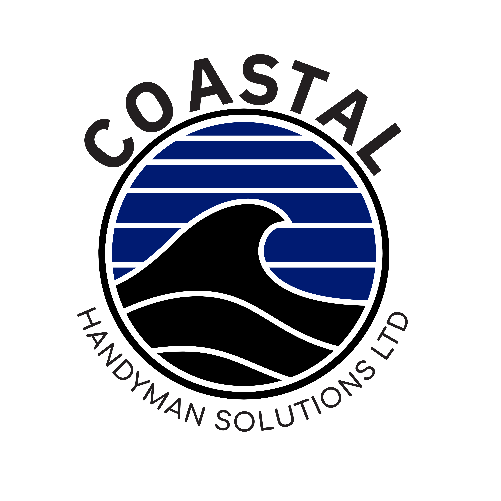
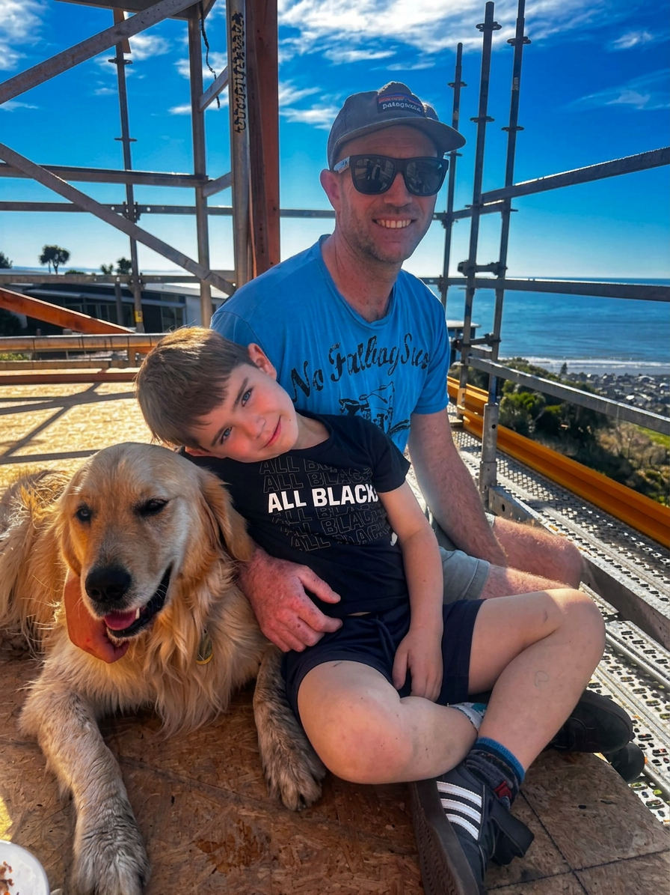
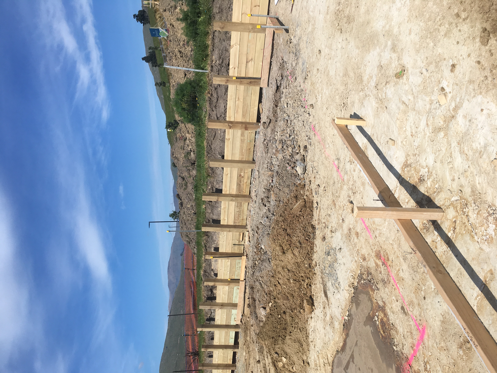
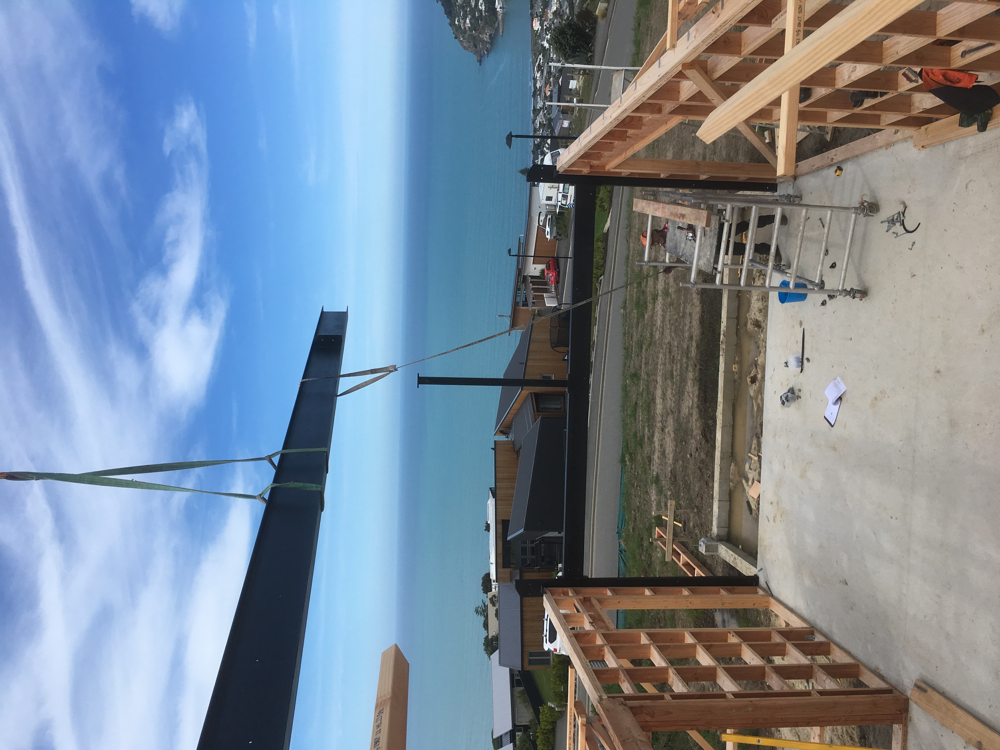
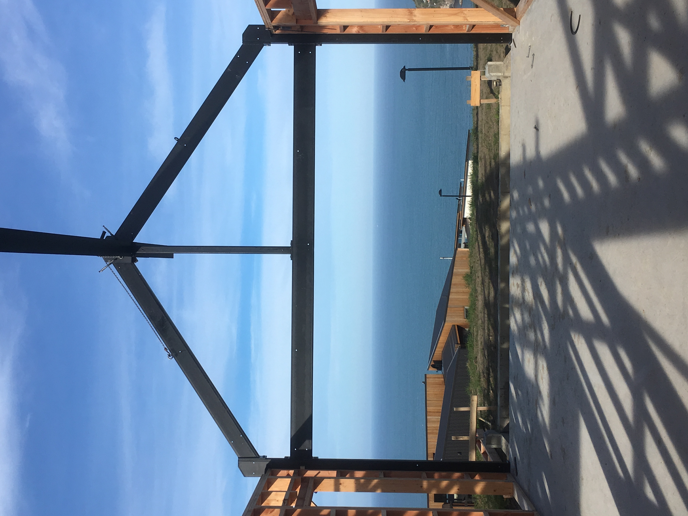
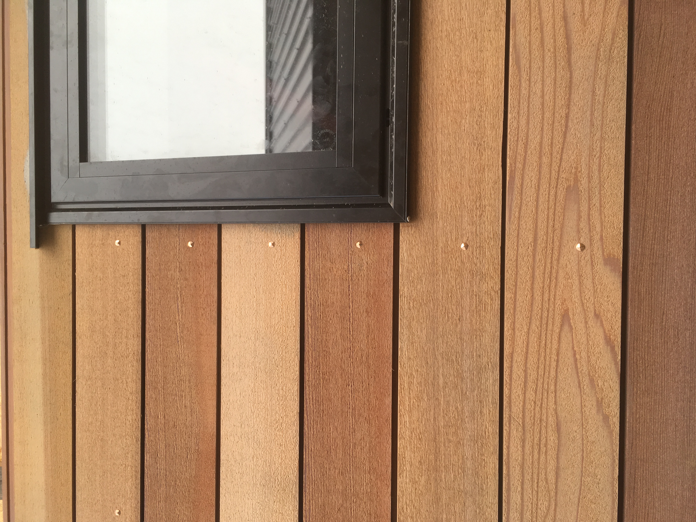

Qualified NZ Builder • Premium Property MaintenanceI’m a qualified builder focused on small jobs, ongoing maintenance, and coastal care for Sumner, Scarborough, Redcliffs, Mt Pleasant, Moncks Bay & the Port Hills.
One trusted person to look after the niggly jobs, rust, weather, and hard-to-reach maintenance that most tradies avoid.

Premium handyman and property maintenance for high-value coastal and hill properties — designed for salt air, wind, steep access, and busy homeowners.
All the small but important jobs most builders don’t want to do.
Preventative work to protect your home from salt, wind and weather.
Regular visits for busy homeowners who want one trusted person.
By quote: small decks, steps, pergolas and coastal-grade timber work that supports long-term maintenance.
Previous building and exterior work in coastal settings. The same attention to detail now goes into every maintenance and handyman job.




“Rich fixed our deck and a list of small jobs in one visit. Turned up when he said he would and left everything tidy. Exactly what we needed living on the hill.”
“Great communication from start to finish. We were away while he did the work and got clear photos and an update afterwards.”
“Finally a qualified tradie who actually wants the small jobs. Highly recommend for coastal homes.”
I’m Richard, a qualified New Zealand builder and owner of Coastal Handyman Solutions Ltd.
After years building and renovating homes, I saw the same problem again and again — homeowners in Sumner and the Port Hills struggled to find reliable, skilled tradespeople for the smaller, ongoing jobs that protect their homes.
Coastal Handyman focuses on those high-value maintenance and handyman tasks for coastal and hillside properties: rust prevention, weatherproofing, small repairs, and regular care. You get a builder’s knowledge and standards, applied to the work that keeps your home safe, tidy and performing well.
Pricing is designed for small jobs and ongoing maintenance, with clear expectations upfront.
For current rates, send a quick message below or give me a call.
Yes. Small jobs and “to-do” lists are my specialty — especially for coastal and hillside homes.
Sumner, Scarborough, Redcliffs, Ferrymead, Mt Pleasant, Moncks Bay, Heathcote and the wider Port Hills area.
Yes. I operate as a registered company with appropriate insurance, so your property is in safe hands.
Absolutely. Many clients prefer this. I can send photo updates and a summary of what’s been done once I’m finished.
One qualified builder, focused on small jobs and ongoing maintenance for coastal and hillside properties.
Call Rich — 021 884 312Drop details of your job below, and Richard will get back to you with availability.
Prefer to call? 021 884 312
Prefer email? richard@coastalhandyman.co.nz